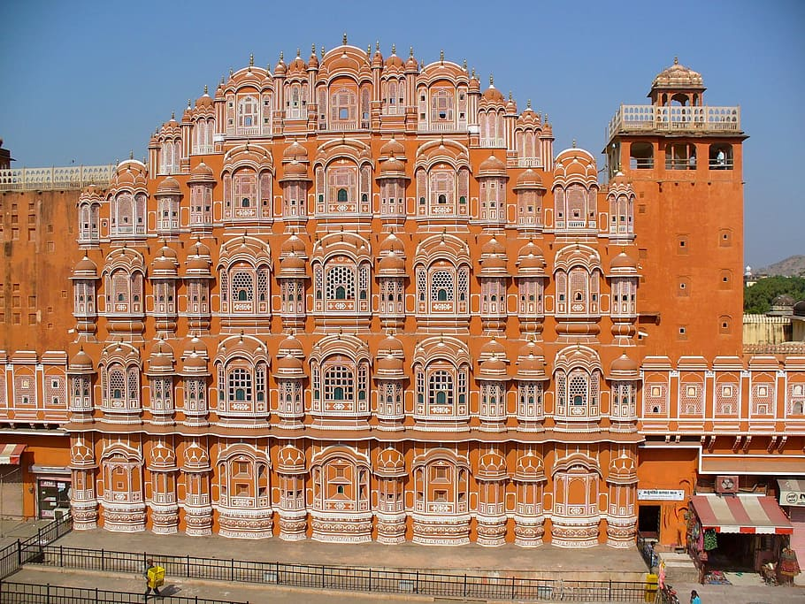
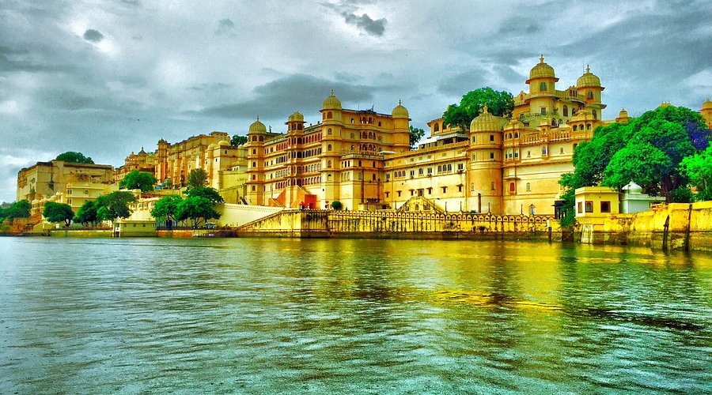
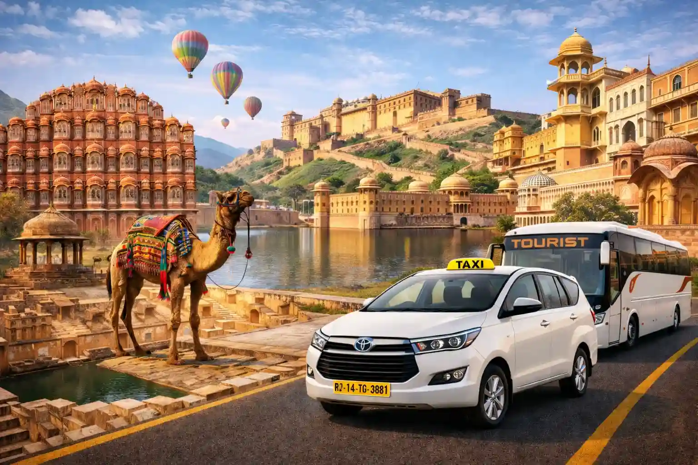

Rajasthan is one of the most fascinating travel destinations in India. Known as the Land of Kings, Rajasthan is famous for its magnificent forts, beautiful palaces, colorful markets, desert landscapes, traditional culture and delicious food.
From the royal streets of Jaipur to the golden sand dunes of Jaisalmer, every city in Rajasthan offers a completely different travel experience. Whether you are planning a family vacation, a romantic trip, a group tour or a solo journey, a Rajasthan Tour can be an unforgettable experience.
The best way to explore Rajasthan is by road because it allows you to enjoy the changing landscapes and visit multiple destinations comfortably. With a reliable taxi and tour service, you can plan your Rajasthan trip according to your schedule and travel comfortably from one city to another.

Explore the magnificent forts and royal architecture of Rajasthan.Best Places to Visit on a Rajasthan Tour
Rajasthan has many beautiful destinations, but some cities are especially popular among tourists.
1. Jaipur – The Pink City
Jaipur is the capital of Rajasthan and one of the most popular tourist destinations in India. The city is known for its pink-colored architecture, royal palaces, historic forts and vibrant bazaars.
Some of the best places to visit in Jaipur include:
- Amber Fort
- Hawa Mahal
- City Palace
- Jantar Mantar
- Jal Mahal
- Nahargarh Fort
- Jaigarh Fort
- Albert Hall Museum
Jaipur is also an excellent starting point for a Rajasthan Tour because it is well connected to other major tourist destinations.
If you enjoy shopping, Jaipur's traditional markets are worth exploring. You can shop for handicrafts, jewelry, textiles, traditional clothes and famous Rajasthani products.
2. Jodhpur – The Blue City
Jodhpur is famous for its blue-painted houses and magnificent Mehrangarh Fort. The fort stands on a hill and offers spectacular views of the Blue City.
Other popular attractions include Jaswant Thada, Umaid Bhawan Palace and the old city markets.
Jodhpur is an excellent destination for travelers who want to experience Rajasthan's royal history and traditional culture.
3. Udaipur – The City of Lakes
Udaipur is one of the most romantic destinations in Rajasthan. Surrounded by lakes and hills, the city is famous for its beautiful palaces and peaceful atmosphere.
Popular attractions include:
- City Palace
- Lake Pichola
- Jag Mandir
- Sajjangarh Palace
- Fateh Sagar Lake
- Saheliyon Ki Bari
A boat ride on Lake Pichola during sunset is one of the most memorable experiences you can enjoy during a Rajasthan trip.

Beautiful Udaipur, the City of Lakes in Rajasthan.4. Jaisalmer – The Golden City
Jaisalmer is located in the heart of the Thar Desert and is famous for its golden sandstone architecture. The city is home to the impressive Jaisalmer Fort, which is one of its biggest attractions.
A visit to Jaisalmer is incomplete without experiencing the desert. Tourists can enjoy camel rides, jeep safaris and traditional cultural programs at desert camps.
Popular places include:
- Jaisalmer Fort
- Patwon Ki Haveli
- Gadisar Lake
- Sam Sand Dunes
- Kuldhara Village
For adventure lovers, spending a night in a desert camp under the open sky can be a wonderful experience.
 Experience the golden Thar Desert and camel safari in Jaisalmer.
Experience the golden Thar Desert and camel safari in Jaisalmer.
5. Pushkar – A Spiritual and Cultural Destination
Pushkar is one of the most famous religious and cultural destinations in Rajasthan. The town is known for Pushkar Lake and the famous Brahma Temple.
Pushkar also has colorful markets where visitors can explore handicrafts, traditional clothing and local products.
The destination is particularly popular among travelers looking for a combination of spirituality, culture and a relaxed atmosphere.
Suggested Rajasthan Tour Itinerary
If you are planning your first Rajasthan trip, a 7-day Rajasthan itinerary can cover several major destinations.
Day 1 – Jaipur
Start your trip in Jaipur. Visit Amber Fort, Jal Mahal, City Palace and Hawa Mahal. In the evening, explore the local markets and enjoy traditional Rajasthani food.
Day 2 – Jaipur
Spend another day exploring Jaipur. You can visit Nahargarh Fort, Jaigarh Fort, Jantar Mantar and Albert Hall Museum.
Day 3 – Jaipur to Jodhpur
Travel from Jaipur to Jodhpur by road. After reaching Jodhpur, explore the old city and local markets.
Day 4 – Jodhpur
Visit Mehrangarh Fort, Jaswant Thada and Umaid Bhawan Palace. Spend some time exploring the famous blue streets of Jodhpur.
Day 5 – Jodhpur to Udaipur
Travel towards Udaipur and enjoy the scenic journey. After reaching Udaipur, relax near Lake Pichola and explore the city in the evening.
Day 6 – Udaipur
Explore City Palace, Fateh Sagar Lake, Saheliyon Ki Bari and other attractions. Enjoy a boat ride on Lake Pichola if time permits.
Day 7 – Udaipur or Return Journey
Depending on your travel plan, you can spend the morning exploring Udaipur or continue towards your next destination.
If you have more time, you can extend your Rajasthan trip by adding Jaisalmer, Pushkar, Bikaner, Mount Abu or Ranthambore to your itinerary.
Best Time for a Rajasthan Tour
The best time to visit Rajasthan is generally during the winter months from October to March. During this period, the weather is more comfortable for sightseeing and road trips.
October and November can be particularly enjoyable because temperatures are comparatively pleasant.
December and January can be colder, especially during mornings and nights, so carrying warm clothes is recommended.
Summer months can be extremely hot in many parts of Rajasthan. However, travelers can still visit during summer if they plan sightseeing during the morning and evening and choose suitable accommodation and transportation.
Why Choose a Taxi for Your Rajasthan Trip?
Rajasthan is a large state, and many popular tourist destinations are located far from each other. Traveling by taxi gives you more flexibility compared with fixed public transportation schedules.
With a private taxi, you can:
- Travel according to your own schedule
- Stop at interesting places during the journey
- Carry luggage comfortably
- Travel with family or friends
- Customize your itinerary
- Visit multiple cities in one trip
- Enjoy a comfortable road journey
For families and groups, choosing a suitable vehicle can make the entire journey more comfortable.

Enjoy a comfortable Rajasthan road trip by taxi.Rajasthan Tour with RD Travels Jaipur
Planning a Rajasthan trip becomes easier when your transportation is arranged in advance. RD Travels Jaipur provides taxi and tour services for travelers looking to explore Jaipur and other destinations across Rajasthan.
You can plan trips for destinations such as Jaipur, Jodhpur, Udaipur, Jaisalmer, Pushkar and other popular places according to your travel requirements.
Whether you are traveling with family, friends or as a couple, choosing the right vehicle and planning your route in advance can make your Rajasthan journey more comfortable and enjoyable.
From local taxi services and airport transfers to outstation trips and Rajasthan tours, a well-planned taxi service can help you explore more destinations without worrying about transportation.
Tips for Planning a Rajasthan Trip
- Plan your route: Rajasthan is large, so plan the cities you want to visit before starting your journey.
- Book accommodation in advance: Hotels and resorts can become busy during the peak tourist season.
- Carry comfortable clothes: Rajasthan can be warm during the day and cool at night, particularly in winter.
- Keep water with you: Staying hydrated is important, especially during long road journeys.
- Start sightseeing early: Morning hours are usually more comfortable for visiting forts and outdoor attractions.
- Keep some extra time: Road trips can be more enjoyable when you don't have to rush from one destination to another.
- Choose comfortable transportation: A reliable private taxi can make long-distance travel much easier.
Experience the Royal Rajasthan
A Rajasthan Tour is much more than visiting forts and palaces. It is an opportunity to experience the history, culture, food, traditions and hospitality of one of India's most colorful states.
From the royal architecture of Jaipur and Jodhpur to the peaceful lakes of Udaipur and the golden desert of Jaisalmer, Rajasthan offers something for every type of traveler.